library(shiny)
# Run the application
shinyApp(ui = ui, server = server)
IMPORTANT
This mini-project must be submitted in groups of 3-4; unfortunately, we cannot make exceptions for smaller or larger groups.
When submitting on Gradescope, only one member needs to submit (there will be a way to indicate group members on Gradescope itself).
Please submit a
.zipfile of the folder you create, containing yourapp.Rfile along with thedatasubfolder.
Overview
A major part of Data Science is the ability to present your results in a coherent and effective manner. Thankfully, we live in an era where many tools exist to help us present our findings! One such tool is that of a Shiny App, an interactive application which can be created using either R or Python. (We will be focusing on the R version of Shiny Apps for this project.) You can read more about shiny apps here: https://shiny.posit.co/.
Our goal in this project will be to build up a small shiny app based on the MNIST dataset (introduced during Lecture on Tuesday, May 28). Specifically, we’ll build an app that allows users to pick which row of the MNIST dataset to generate an image from, and also how many dimension to use when compressing the image via PCA. Our final app will look something like this:
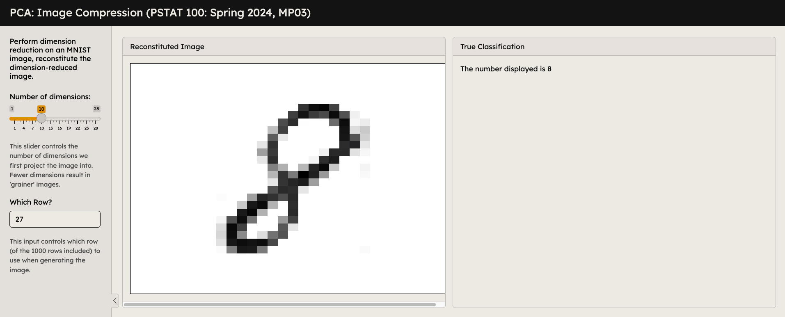
Important
I recommend waiting until after Lecture on Tuesday, May 28 before starting this project (as we will be covering some important code during that lecture which may prove useful for completing this project).
Step 1
We’ll start off by creating a blank shiny app. Navigate to File > New File > Shiny Web App, which should then trigger the following popup:
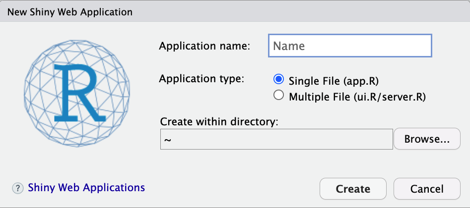
Give the file an appropriate name, and select an appropriate destination in which to create your app; then, click “Create”.
Important
Do NOT create your app in the MP03 that was provided by the course; doing so might mess up the synchronizing between your server instance and the course GitHub page. Instead, create a new subfolder in your “local” working directory in which to create your app.
Step 2
Completing step 1 should trigger the creation (in your specified directory) of a file called app.R, whose contents should look like the following:
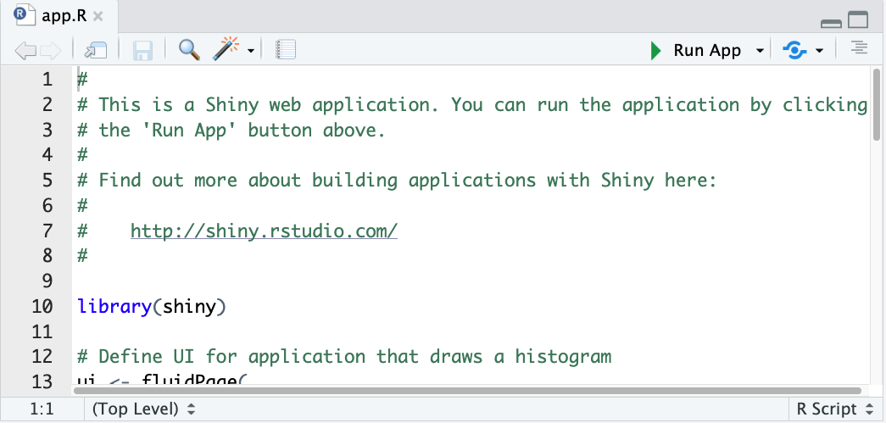
If you would like, you’re welcome to click the “Run App” button at the top-right corner of your console, but you do not need to as our next step is going to be deleting the contents of this file, and replacing it with only the following lines:
So, when you’re done, your file should now look like this:
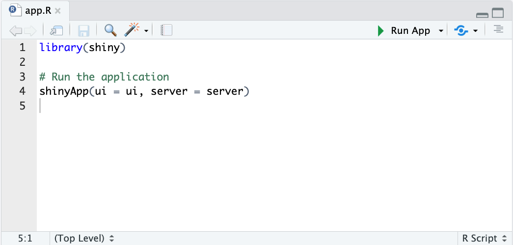
Step 3
Before we start adding some interactive content to our app, we should quickly discuss how R generates a Shiny App from our code. In general, a Shiny App is comprised of three things:
- a user interface (UI) object
- a server function
- a call to the
shinyApp()function.
The UI object controls the layout, appearance, and aesthetics of the app, whereas the server function contains the information our computer uses to actually build the app. The shinyApp() function essentially weaves the UI and server objects together, to produce a fully-functional (and interactive) application.
Right now our app contains a call to shinyApp, but has no UI or server function. Let’s fix that!
Step 4
We’ll start by adding in a server function. The server function needs to be a function on two arguments, called input and output. This is due to the way the shinyApp() function works; it expects an input and output argument in order to work. After library(shiny) but before # Run the application, add the following code:
server <- function(input, output) {
}Now, just for fun, try clicking the “Run App” button. R should return an error- indeed, that’s because we haven’t defined a UI object! Let’s fix that.
Step 5
In order to get our app to look right, we’ll actually need to load another package. Load the bslib package right after loading the shiny package.
Then, right before the line where you defined the server function, insert the following code:
ui <- page_sidebar(
)Your overall document should now look like this:
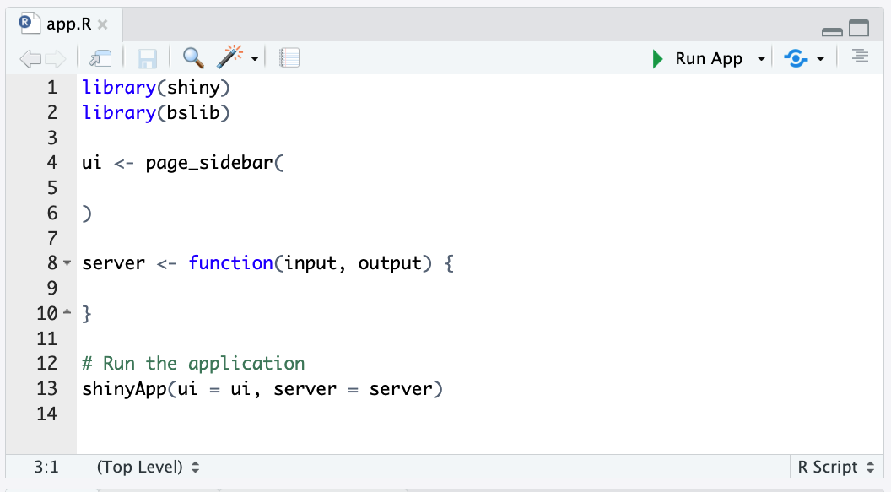
Click the “Run App” button. Depending on your settings, a window will either pop up in a new tab or a new window (or possibly even in the RStudio viewer). Congratulations - we’ve made an app!
Step 6
Okay, we’ve made an app… but have we really? Right now, our app is just a blank page. Booooring. Let’s add some stuff!
Now, keep in mind that pretty much everything we add at this point will be inside the call to page_sidebar().
We’ll start off by adding a title. Add the following code to your call to page_sidebar():
title = "PSTAT 100, MP03",
sidebar = sidebar("sidebar"),
"main contents"Click “Run App”, and check that your app looks something like this:
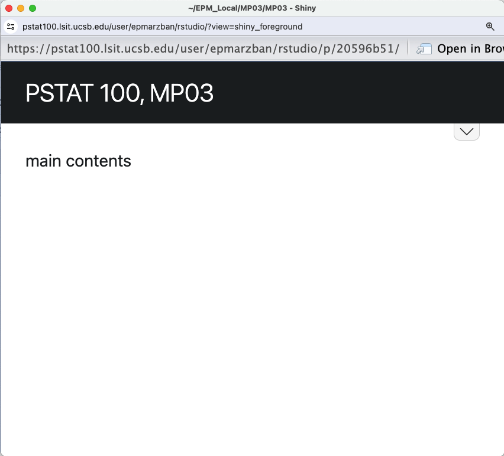
To make things a little easier to read, I recommend clicking the “Open in Browser” button, which should trigger the app to open in a new window (or tab, depending on your settings) in your default browser. My default browser is Google Chrome, and my settings are such that the app will open in a new tab, so clicking “Open in Browser” would, for me, produce the following:
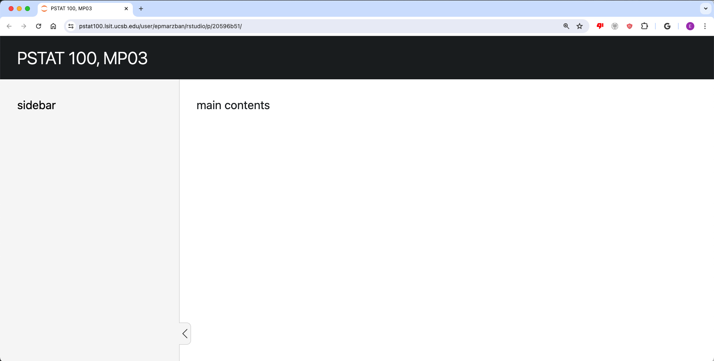
Taking Stock
Ok, so from what we just did, it should hopefully be clear that:
- the
titleargument ofpanel_sidebar()controls the title of the app - the
sidebarargument ofpanel_sidebar()creates a sidebar (i.e. content that appears in a collapsible bar at the side of the screen).
Step 7
Alright, cool! But things still aren’t quite interactive. This is where widgets come into play. A widget is essentially a tool that users can use to specify inputs to the app. Shiny comes equipped with the following widgets (this table has been copied from https://shiny.posit.co/r/getstarted/shiny-basics/lesson3/; all rights reserved to the original author):
| function | widget |
|---|---|
actionButton |
Action Button |
checkboxGroupInput |
A group of check boxes |
checkboxInput |
A single check box |
dateInput |
A calendar to aid date selection |
dateRangeInput |
A pair of calendars for selecting a date range |
fileInput |
A file upload control wizard |
helpText |
Help text that can be added to an input form |
numericInput |
A field to enter numbers |
radioButtons |
A set of radio buttons |
selectInput |
A box with choices to select from |
sliderInput |
A slider bar |
submitButton |
A submit button |
textInput |
A field to enter text |
Additionally, Shiny understands the following markdown-adjacent functions:
| function | output |
|---|---|
h1() |
First-level header text |
h2() |
Second-level header text |
| … | … |
p() |
Paragraph text |
b() |
Boldfaced text |
Here’s your task: play around with the different functions and inputs to sidebar() to get your sidebar to look like the following:
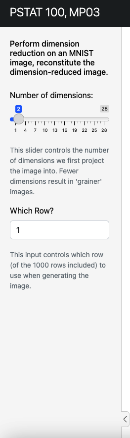
Some things to note:
- the default value of the “Number of Dimensions” slider should be 2
- the default value of the “Which Row?” slider should be 1.
IMPORTANT
This is part of how we will grade your mini-projects (please see the rubric below for more details).
Also, keep in mind that you will need to create an inputId for each widget. The inputId is what we will use to reference each widget in the output of our app later. For now, just imagine that the inputId of a given widget is like a variable name for that widget.
Step 8
Let’s add some cards to our app. Replace the “main contents” with two calls to the card() function, leaving the arguments blank (for now). When you’re done, running your app should produce the following:
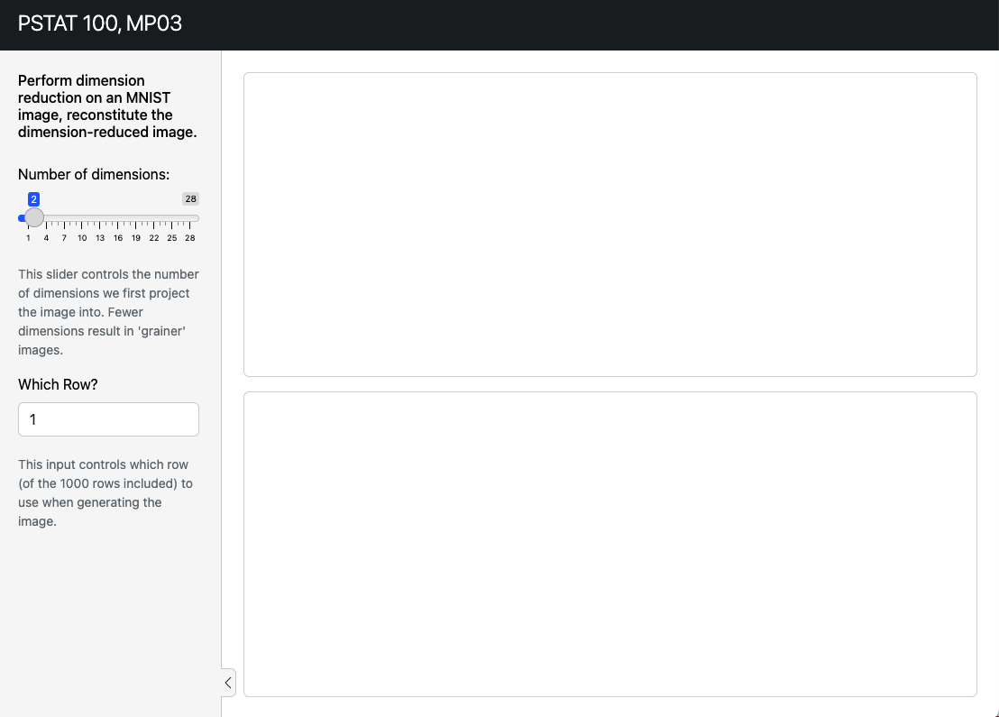
Now, notice how this isn’t quite what the final output of our app is supposed to look like - specifically, we’d like our two cards to be adjacent to one another in the same row. We can fix this by wrapping our calls to card() into a call to layout_columns(). When you’re done (and after running your app), you should get something that looks like this:
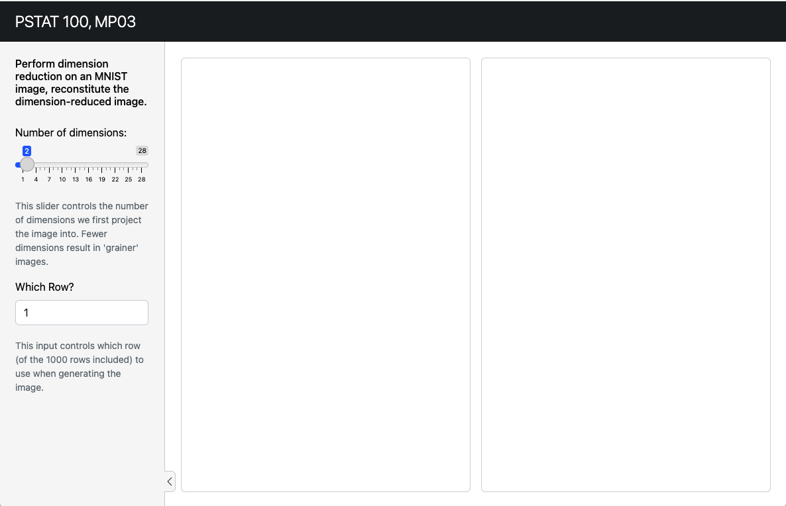
Step 9
Okay, we’re almost there! It’s now time to start adding some interactivity. Let’s start off by adding in the text that says “The number displayed is X”.
Copy the following code into your second call to card():
card_header("True Classification"),
textOutput("verb")Then, inside your server function, add the line
output$verb <- renderText({ paste0("The number displayed is ",
<FILL THIS IN>)
})where you should replace <FILL THIS IN> with appropriate code to extract out the digit.
Thinking Broadly
Remember, the user is supposed to be able to specify which row of the MNIST dataset to examine. What we are doing in this step is allowing the user to specify a row of the MNIST dataset, and then see exactly what number is supposed to be displayed.
Check that your app, when run, looks like this:
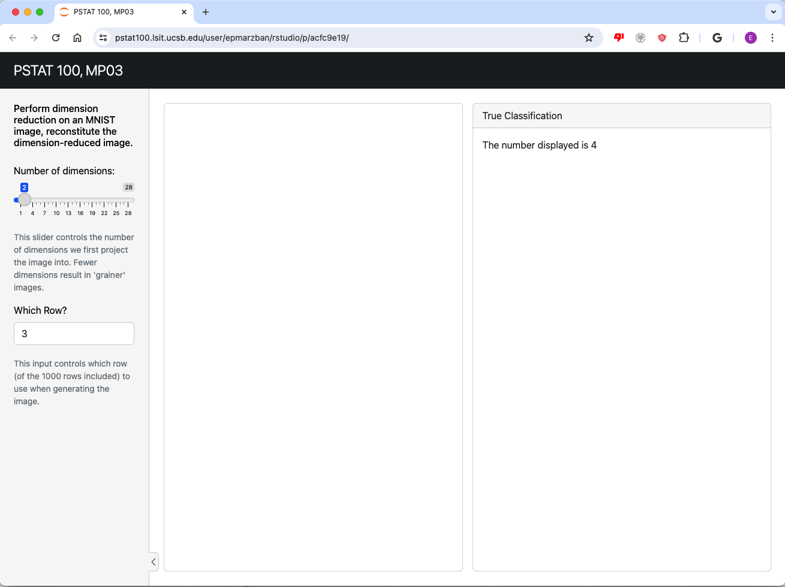
Also check that changing the “Which Row?” input changes the text that is displayed.
Some Hints:
Start off by reading in the MNIST dataset, and assigning it to a variable name. You can do this at the very top of your code, right below the line
library(bslib).Somewhere in the
<FILL THIS IN>code that you need to write, you’ll need to reference both the name of the variable used to store the MNIST data, and alsoinput$<something>where you replace<something>with thelabelIDof yournumericInputwidget.- So, for example, if I’ve labeled my
numericInputwidgetwhich_row, I’ll need to use the codeinput$which_rowto extract the value ofwhich_rowthat the user of the app has specified.
- So, for example, if I’ve labeled my
Step 10
Alright, we’re almost there! Our last task will be to populate the middle card with an image, obtained by a row of the MNIST dataset that is specified by the user.
Re-examine the code from Lecture 17, Demo 3. Then, copy-paste it into your server function, and modify it as necessary to ensure that:
the image generated is generated from the row of the MNIST dataset that is specified in the “Which Row?” widget
changing the number of dimensions (using the “Number of dimensions” slider) actually changes the resolution of the image.
Your app, when run, should look something like this:
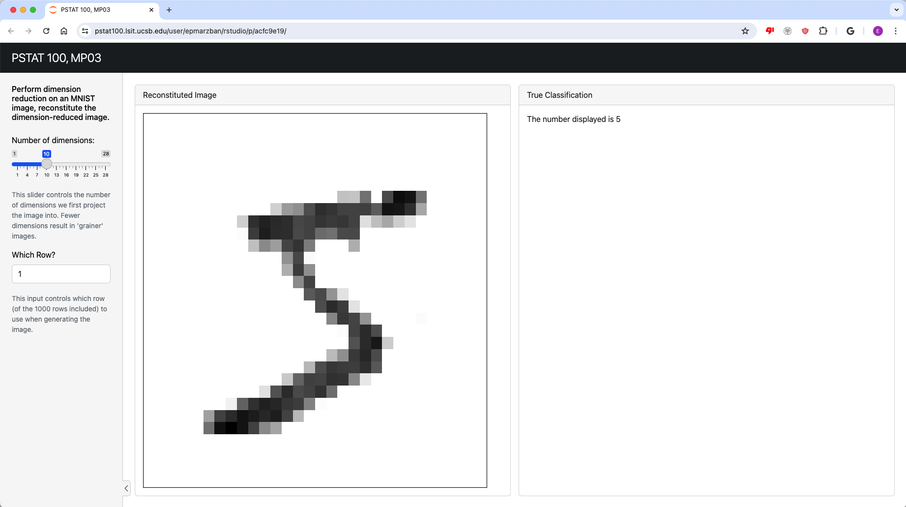
The code for your app should look something like this:
library(shiny)
library(tidyverse)
library(bslib)
mnist <- read.csv("data/mnist.csv")
ui <- page_sidebar(
title = "PSTAT 100, MP03",
sidebar = sidebar(
<some stuff here>
),
layout_columns(
<some stuff here involving cards>
)
)
server <- function(input, output) {
output$verb <- renderText({ paste0("The number displayed is ",
<something here from step 9>
})
output$distPlot <- renderPlot({
<modified code from the Lecture 17 Demo>
})
}
# Run the application
shinyApp(ui = ui, server = server)Step 11
Our last step is to add some theming! Right after you open your call to page_sidebar(), include the following line:
theme = bs_theme(version = 5, bootswatch = "minty"),So, the first few lines of your definition of ui should look like
ui <- page_sidebar(
theme = bs_theme(version = 5, bootswatch = "minty"),
<other stuff>
)Check that your app now looks like this:
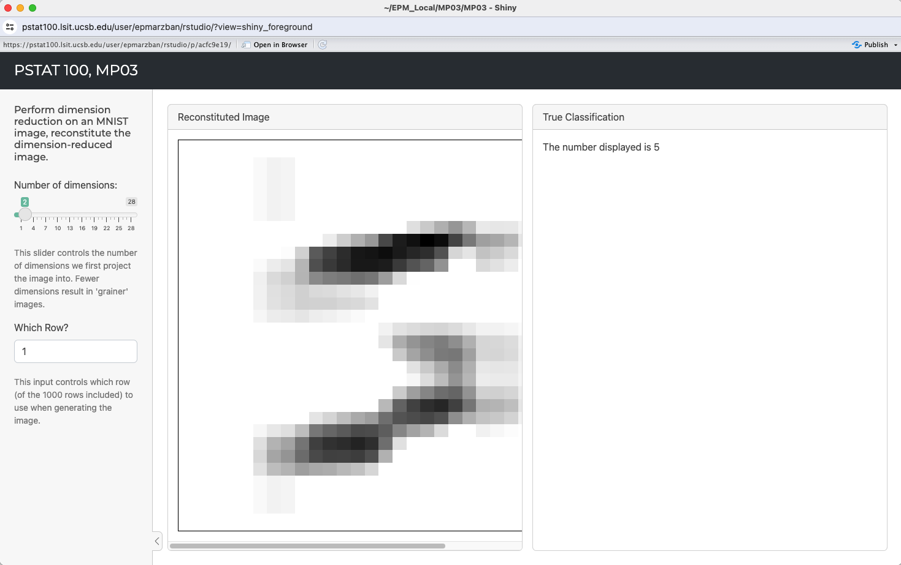
Notice how some of the colors and fonts have changed. Pretty neat, huh? Now, take a look through this website, which lists common themes that come equipped with Shiny. Pick one (other than minty!) to use for your app, by replacing "minty" with the name of your selected theme in the call to bs_theme() we just added.
All Done!
Congratulations - you’ve just made a fully functional applet! I hope this exercise was somewhat fun for you, and that you will consider using Shiny apps to present your findings and analyses in the future.
Information on Grading
To grade your project submissions, the grader will download your project files and run the app you created locally. They will then assign a grade based on the following criteria:
+1 point: Correct default values (i.e. we will check that your widgets have the correct default values; 0.5pts for each widget).
+2 points: App is interactive (i.e. if we change inputs, the output also changes). 1 point will be assigned for each widget.
+1 point: Correct plot (i.e. we’ll check that your plot is correct, not rotated or inverted)
+1 point: Correct text (i.e. we’ll check that your text, displaying the true number each image is displaying, is correct. We’ll pick a few arbitrary rows of the
MNISTdataset to test this.)+1 point: Correct aesthetics (i.e. we’ll check that you’ve changed at least one of the default colors and fonts).
Also, this is VERY important: if your app doesn’t even open (due to an incorrect file format when uploading, or incorrect zipping, or something else of the like) your group will receive a score of ZERO on this project. It is not fair to the grader to expect them to parse through your raw code - thank you for understanding!